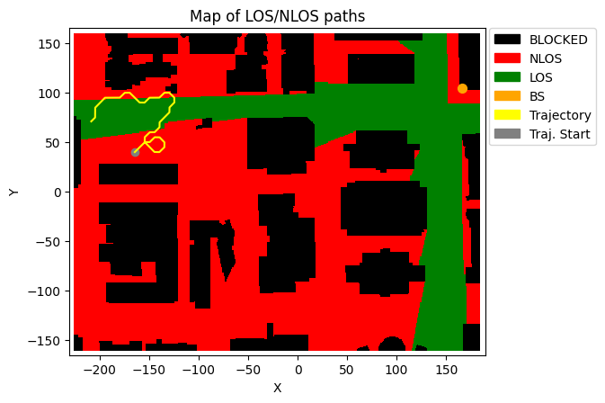

Creating temporally and spatially consistent sequences of channel matrices
[7]:
import numpy as np
from neoradium import DeepMimoData, TrjChannel, Carrier, AntennaPanel, random
[8]:
# Replace this with the folder on your computer where you store DeepMIMO scenarios
dataFolder = "/data/RayTracing/DeepMIMO/Scenarios/V4/"
DeepMimoData.setScenariosPath(dataFolder)
# Create a DeepMimoData object
deepMimoData = DeepMimoData("asu_campus_3p5")
deepMimoData.print()
DeepMimoData Properties:
Scenario: asu_campus_3p5
Version: 4.0.0a3
UE Grid: rx_grid
Grid Size: 411 x 321
Base Station: BS (at [166. 104. 22.])
Total Grid Points: 131,931
UE Spacing: [1. 1.]
UE bounds (xyMin, xyMax) [-225.55 -160.17], [184.45 159.83]
UE Height: 1.50
Carrier Frequency: 3.5 GHz
Num. paths (Min, Avg, Max): 0, 6.21, 10
Num. total blockage: 46774
LOS percentage: 19.71%
[9]:
random.setSeed(123) # Make results reproducible
# Create the carrier:
carrier = Carrier(startRb=0, numRbs=25, spacing=15) # Carrier with 25 Resource Blocks, 15KHz subcarrier spacing
bwp = carrier.curBwp # The only bandwidth part in the carrier
# Create a random trajectory at waking speed.
trajectory = deepMimoData.getRandomTrajectory(xyBounds=np.array([[-210, 40], [-120, 100]]), # Traj. bounds
segLen=5, # Num grid points on shortest segment
bwp=bwp, # The bandwidth part
trajLen=200, # Number of grid points on trajectory
speedMps=1.2) # Speed in mps (Walking)
trajectory.print() # Print the trajectory information
deepMimoData.drawMap("LOS-NLOS", trajectory) # Draw the Map with the trajectory
Trajectory Properties:
start (x,y,z): (-164.55, 39.83, 1.50)
No. of points: 201752
curIdx: 0 (0.00%)
curSpeed: [0.85 0.85 0. ]
Total distance: 242.08 meters
Total time: 201.751 seconds
Average Speed: 1.200 mps
Carrier Frequency: 3.5 GHz
Paths (Min, Avg, Max): 1, 8.97, 10
Totally blocked: 0
LOS percentage: 32.84%
[9]:
(<Figure size 742.518x471.734 with 1 Axes>,
<Axes: title={'center': 'Map of LOS/NLOS paths'}, xlabel='X', ylabel='Y'>)

[10]:
# Create a MIMO channel model based on our trajectory.
channel = TrjChannel(bwp, trajectory,
txAntenna = AntennaPanel([2,4], polarization="x"), # 8 TX antenna
txOrientation = [180,0,0], # Facing to the left
rxAntenna = AntennaPanel([1,2], polarization="x")) # 2 RX antenna
print(channel)
TrjChannel Properties:
carrierFreq: 3.5 GHz
normalizeGains: True
normalizeOutput: True
normalizeDelays: True
xPolPower: 10.00 (db)
filterLen: 16 samples
delayQuantSize: 64
stopBandAtten: 80 db
dopplerShift: 14.015298117569412 Hz
coherenceTime: 0.030191451092315417 Sec.
TX Antenna:
Total Elements: 16
spacing: 0.5𝜆, 0.5𝜆
shape: 2 rows x 4 columns
polarization: x
RX Antenna:
Total Elements: 4
spacing: 0.5𝜆, 0.5𝜆
shape: 1 rows x 2 columns
polarization: x
Orientation (𝛼,𝛃,𝛄): 0° 0° 0°
Trajectory:
start (x,y,z): (-164.55, 39.83, 1.50)
No. of points: 201752
curIdx: 0 (0.00%)
curSpeed: [0.85 0.85 0. ]
Total distance: 242.08 meters
Total time: 201.751 seconds
Average Speed: 1.200 mps
Carrier Frequency: 3.5 GHz
Paths (Min, Avg, Max): 1, 8.97, 10
Totally blocked: 0
LOS percentage: 32.84%
[11]:
# Now create a sequence generator that generates up to 20 sequences with sequences
# of length 10, containing every other slot.
# Trajectory Points: 0 1 2 3 4 5 6 7 8 9 10 11 12 13 14 15 16 17 18 19 20 21 22 ...
# Channels in the sequence: 0 1 2 3 4 5 6 7 8 9 0 1 ...
# Sequence Number: 0 0 0 0 0 0 0 0 0 0 1 1 ...
chanSeqGen = channel.getChanSeqGen(seqPeriod=2, seqLen=10, maxNumSeq=20)
[12]:
chanSeqGen.reset()
for i, chanSeq in enumerate(chanSeqGen):
print(f"Shape of Sequence {i}: {chanSeq.shape}")
Shape of Sequence 0: (10, 14, 300, 4, 16)
Shape of Sequence 1: (10, 14, 300, 4, 16)
Shape of Sequence 2: (10, 14, 300, 4, 16)
Shape of Sequence 3: (10, 14, 300, 4, 16)
Shape of Sequence 4: (10, 14, 300, 4, 16)
Shape of Sequence 5: (10, 14, 300, 4, 16)
Shape of Sequence 6: (10, 14, 300, 4, 16)
Shape of Sequence 7: (10, 14, 300, 4, 16)
Shape of Sequence 8: (10, 14, 300, 4, 16)
Shape of Sequence 9: (10, 14, 300, 4, 16)
Shape of Sequence 10: (10, 14, 300, 4, 16)
Shape of Sequence 11: (10, 14, 300, 4, 16)
Shape of Sequence 12: (10, 14, 300, 4, 16)
Shape of Sequence 13: (10, 14, 300, 4, 16)
Shape of Sequence 14: (10, 14, 300, 4, 16)
Shape of Sequence 15: (10, 14, 300, 4, 16)
Shape of Sequence 16: (10, 14, 300, 4, 16)
Shape of Sequence 17: (10, 14, 300, 4, 16)
Shape of Sequence 18: (10, 14, 300, 4, 16)
Shape of Sequence 19: (10, 14, 300, 4, 16)
[ ]: